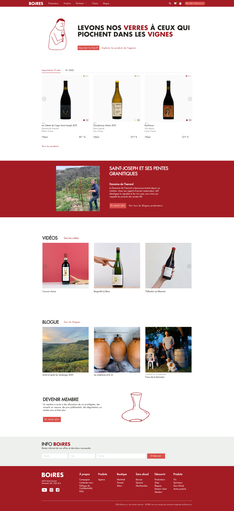
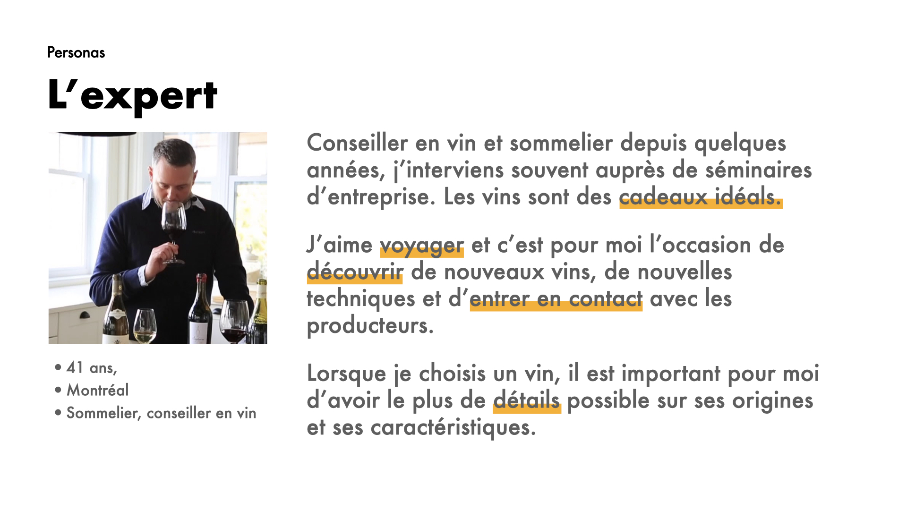
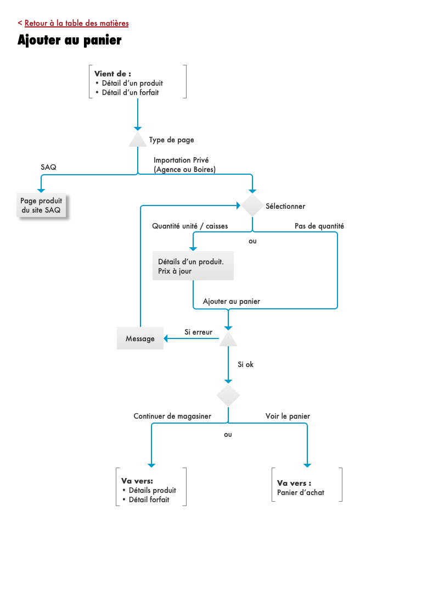
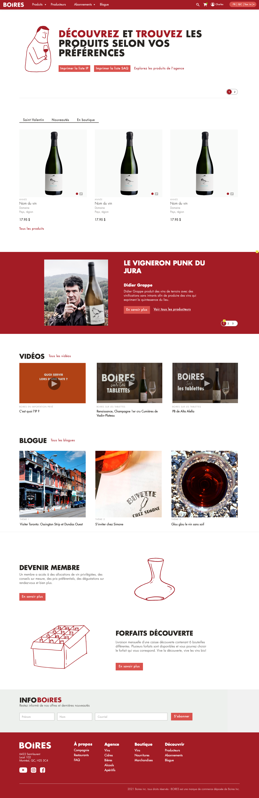
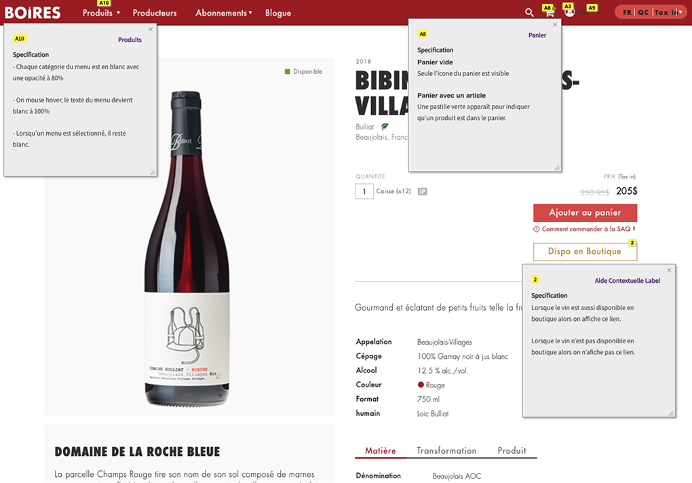

DéfisChallenge
L'objectif était de moderniser l'écosystème de commande d'origine de Boires.ca. Il fallait remplacer un système fragmenté de traitement manuel (commandes par téléphone et courriel) par une plateforme transactionnelle centralisée, intégrant un panier numérique robuste et une passerelle de paiement en ligne adaptée aux besoins spécifiques de leurs marchés B2B et B2C.
The objective was to modernize Boires.ca’s legacy ordering ecosystem. We needed to replace a fragmented system of manual processing (phone and email orders) with a centralized transactional platform, integrating a robust digital cart and online payment gateway tailored to the specific needs of their B2B and B2C markets.
Mon rôleMy Role
Lead UX/UI Designer. J'ai dirigé la stratégie de design de bout en bout, définissant l'architecture d'information, établissant les modèles d'interaction et livrant des spécifications fonctionnelles complètes pour le développement.
Lead UX/UI Designer. I directed the end-to-end design strategy, defining the information architecture, establishing the interaction models, and delivering comprehensive functional specifications for development.
L'impactThe Impact
- Fidélité d'implémentation : La plateforme en ligne reflète fidèlement les prototypes haute fidélité. Des spécifications fonctionnelles détaillées ont permis aux développeurs indépendants de construire et lancer le système en toute autonomie, en préservant la vision UX d'origine.
- Implementation Fidelity: The live platform reflects the high-fidelity prototypes. Detailed functional specifications allowed independent developers to build and launch the system autonomously, maintaining the original UX vision.
- Fluidité transactionnelle : Conception réussie d'un tunnel de paiement en plusieurs étapes gérant de manière transparente les réglementations complexes sur les alcools canadiens (directives de la SAQ) et la taxation spécifique par province derrière une interface utilisateur sans friction.
- Transactional Fluidity: Successfully architected a multi-step checkout flow that seamlessly handles complex Canadian liquor regulations (SAQ guidelines) and province-specific taxation behind a frictionless user interface.
- Synergie contenu-commerce : Création d'un écosystème numérique unifié où coexistent contenu éducatif et commerce électronique, en s'appuyant sur l'autorité existante de la marque pour stimuler la découverte organique de produits et les ventes.
- Content-to-Commerce Synergy: Created a unified digital ecosystem where educational content and e-commerce coexist, leveraging the brand's existing authority to drive organic product discovery and sales.

Le processusThe Process
Stratégie basée sur les personasPersona-Driven Strategy
Cartographie de trois modèles mentaux d'utilisateurs distincts — l'Amateur (achat en gros), l'Expert (spécifications techniques) et l'Enthousiaste (exploration) — pour concevoir des parcours d'achat personnalisés selon le niveau de connaissance du vin.
Mapped three distinct user mental models—the Amateur (bulk purchasing), the Expert (technical specifications), and the Enthusiast (exploration)—to architect tailored purchasing journeys based on wine literacy.

Architecture d'information (IA)Information Architecture (IA)
Restructuration complète de l'écosystème numérique pour équilibrer le catalogue de produits, les histoires de producteurs et le contenu du blogue éducatif.
Restructured the entire digital ecosystem to balance product catalogs, producer stories, and educational blog content.

Priorisation du contenuContent Prioritization
Utilisation du tri de cartes et de la stratégie de contenu pour définir un système de filtrage essentiel (provenance, prix, accords), réduisant considérablement la charge mentale et la fatigue décisionnelle lors de sélections de produits complexes.
Leveraged card sorting and content strategy to define an essential filtering system (provenance, price, pairings), drastically reducing cognitive load and decision fatigue during complex product selections.
Prototypage haute fidélité & règles d'affairesHigh-Fidelity Prototyping & Business Rules
Développement d'un système de design robuste et de maquettes interactives traduisant visuellement des règles d'affaires complexes (calculs de taxes SAQ, logique d'inventaire) en modèles d'interface intuitifs.
Developed a robust design system and interactive wireframes that visually translated complex business rules (SAQ tax calculations, inventory logic) into intuitive UI patterns.

Design pour la productionDesign for Production
Livraison d'actifs d'interface précis et de spécifications fonctionnelles annotées, garantissant un transfert clair et sans ambiguïté pour l'implémentation technique.
Delivered precise UI assets and annotated functional specifications, ensuring a clear and unambiguous hand-off for technical implementation.
